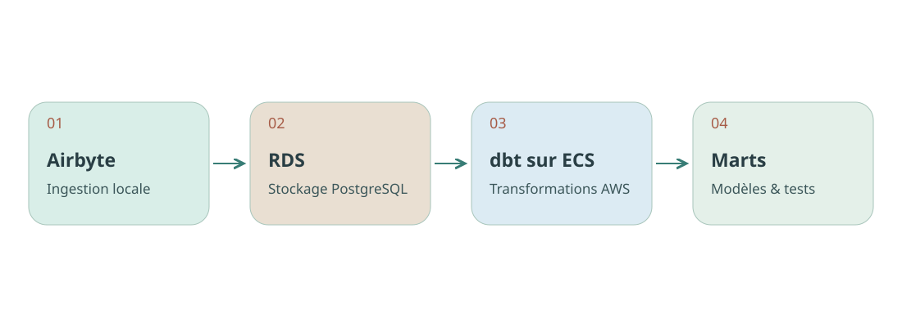
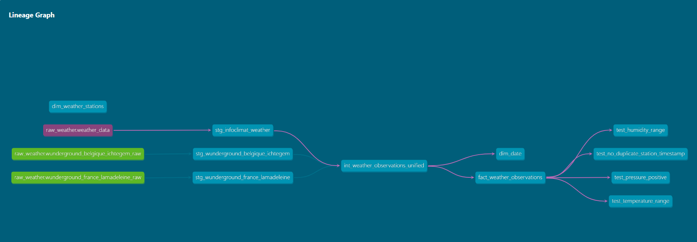

Schéma explicatif du périmètre décrit ; les environnements sont précisés dans l’étude.
Le besoin et ma contribution
Des observations issues de plusieurs sources doivent être rapprochées à une granularité explicite pour devenir exploitables. J’ai structuré le stockage, les transformations SQL, les contrôles métier et leur exécution conteneurisée.
Du RAW aux modèles analytiques
- Collecter : Airbyte est exécuté localement et alimente PostgreSQL sur RDS.
- Transformer : couches RAW, staging, intermédiaire puis marts ; table de faits des observations et dimensions date/station.
- Exécuter : image conteneur stockée dans ECR, tâche ECS Fargate, planification EventBridge et journaux CloudWatch.
- Configurer : identifiants injectés via Secrets Manager ; paramètres de sauvegarde et de chiffrement RDS.
Des modèles compréhensibles et testables
La séparation des couches permet de suivre les transformations et de tester chaque modèle. Les contrôles combinent unicité, valeurs non nulles, relations et règles métier sur la température, l’humidité, la pression et les doublons station/horodatage.


Résultats documentés
Les livrables consignent 3 822 lignes RAW et 579 observations analytiques pour deux stations Weather Underground. Ces nombres décrivent des niveaux différents : leur écart n’est pas un taux de perte ou de déduplication. Le résultat analytique présenté porte sur ces deux stations ; InfoClimat apparaît également dans les sources et le lineage.
Périmètre et prochaines étapes
La démonstration cloud ne constitue pas une exploitation commerciale. Airbyte reste local ; RDS est en configuration Single-AZ et le périmètre temporel est limité. Les sources dbt complètes restent à regrouper dans un dépôt reproductible. La suite consiste à renforcer la reprise après échec, les alertes de fraîcheur et l’historisation.
Code et éléments de preuve
Les extraits et résultats ci-dessous proviennent des livrables du projet, consultés le 16 novembre 2026. Les traitements n’ont pas été réexécutés pour cette présentation.